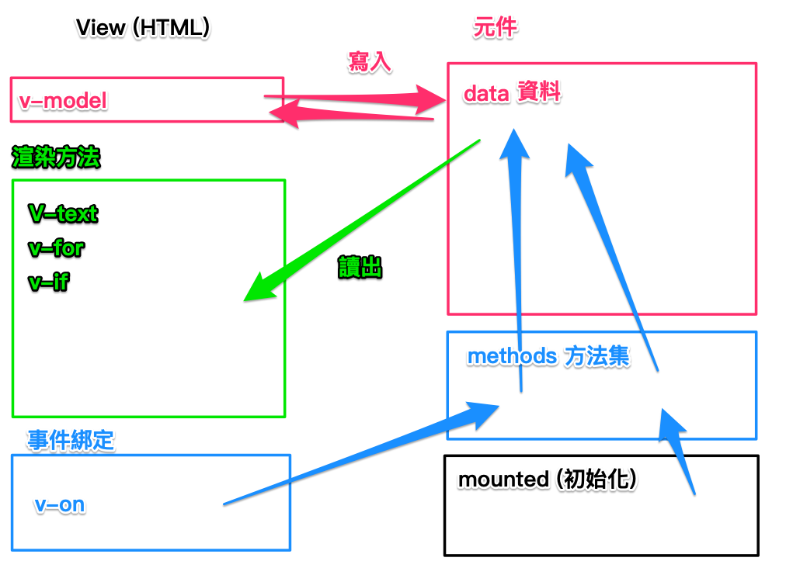

為何要使用到Vue來寫網頁
Vue使用到了關注點分離的概念，資料歸資料，畫面規畫面
畫面渲染方面交由Vue本身去處理，方便程式的撰寫及可讀性
常見的格式
| <script src="https://unpkg.com/vue@next"></script>
<!-- 這裡是 html -->
<div id="app">
{{ text }}
</div>
|
1
2
3
4
5
6
7
8
9
10
11
12
13
14
15
16
17
18
19
20
21
22
| // 這裡是 Vue
Vue.createApp({
// data 用到的資料
data: function() {
// 一定是用 return
return {
text: 'hi im 小明',
name: '小明',
num: 0
}
},
// methods 資料處理的方法
methods: {
},
// mounted 生命週期
mounted: function() {
},
}).mount('#app');
|
Vue常用到的指令
v-model：和 html 雙向綁定 data 資料（會同步兩邊資料）
1
2
| <input type="number" v-model="num">
|
v-bind：在 html 標籤上進行屬性綁定(省略語法：直接在屬性前加上 : 省略 v-bind)
1
2
| <img v-bind:src="person.image" :alt="person.name" width="100">
|
v-if：將判斷式寫入 “” 中，若是 true 則會顯示，false 則不會顯示
v-else：不用加判斷式，但需要搭配 v-if 一起使用（若要還需要判斷，則使用 v-else-if）
1
2
3
4
| <i v-if="person.gender === 'male'"></i>
<i v-else-if="person.gender === 'female'"></i>
<i v-else></i>
|
v-for：多筆資料透過迴圈方式將資料迭代出來
1
2
3
4
5
6
7
8
9
10
11
12
13
14
15
16
17
18
19
| <ul>
<li v-for="item in people">
{{ item.name }}
<button type="button">增加</button>
<img :src="item.image" :alt="item.name">
<i v-if="item.gender === 'male'"
class="bi bi-gender-male"
></i>
>
<i v-else
class="bi bi-gender-male"
></i>
{{ item.cash }}
</li>
</ul>
//people 是 data 中的陣列
item 代表 people 中，每一個獨立的物件， item 可自定義名稱
v-for 必須帶 key 以作為唯一值
|
v-on:事件名稱 (可用@代替v-on，如@click=””)
1
2
3
4
5
|
<button type="button" @click="item.cash++">
增加
</button>
|
v-model修飾符:
於雙向綁定的資料上增加一些限制
例如:
lazy：編輯完成後，會觸發更新資料（離開 focus 的時候）
number：限制只有數值型別的資料才能寫入
v-model 預設是字串型別
trim：去除字串前後多餘的空白
1
2
3
4
5
6
7
8
9
10
11
|
<div id="app">
<input type="text" v-model.number="number" >
{{ number }}
{{ typeof number }}
<hr>
<input type="text" v-model="number2">
{{ number2 }}
{{ typeof number2 }}
</div>
|
v-on:事件觸發
可以於後面加上.prevent來去除html標籤預設事件
雙向綁定概念圖
